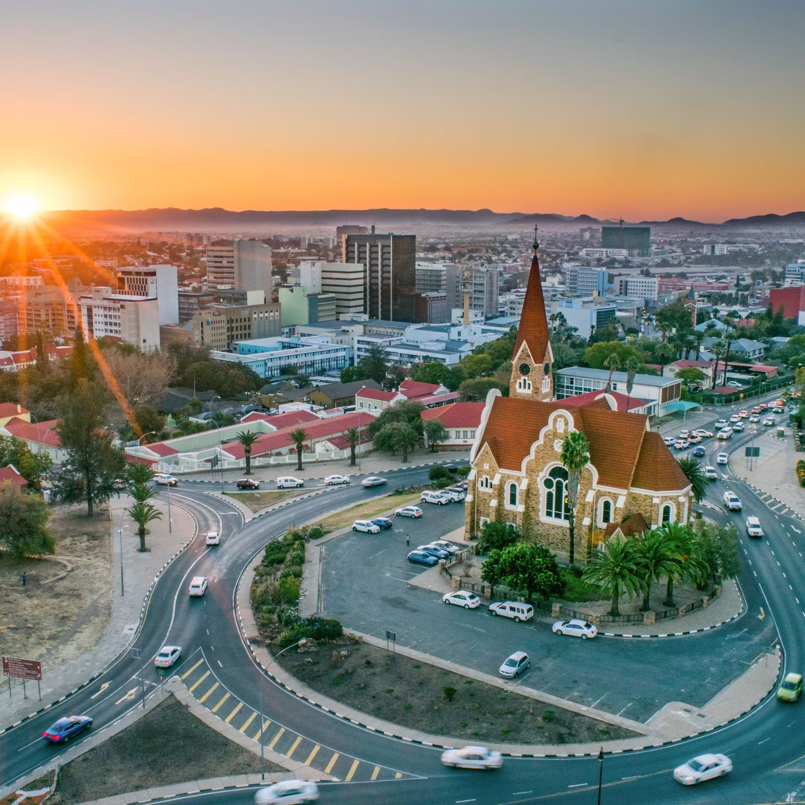
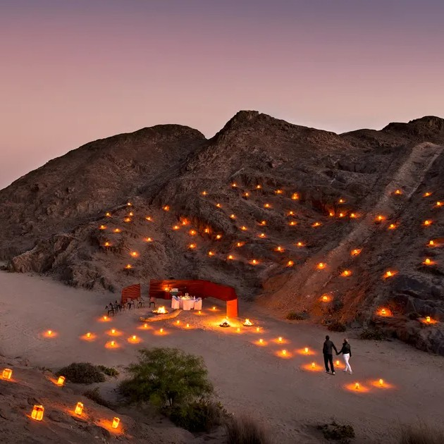

Nambia
From Namib Desert Wonders to Etosha's Wildlife Spectacle
My Namibian odyssey commenced in the capital city of Windhoek, nestled within the embrace of the Khomas Highland. This charming city served as my gateway to the untamed wilderness of Namibia. Windhoek's blend of German colonial architecture and African vibrancy set the stage for the adventures to come. In Windhoek, I explored the city's vibrant craft markets, where I had the chance to interact with local artisans. I was captivated by their skill and creativity, and I left with beautifully handcrafted souvenirs that would forever remind me of Namibia's warm hospitality.
 One of the highlights of my journey was the ethereal landscape of Sossusvlei in the Namib Desert. The towering red sand dunes of this surreal desert region are a sight to behold, their contours shifting with the sun's passage. Rising early, I ventured to the renowned Dune 45 to witness the sunrise casting a golden hue over the desert, creating a breathtaking spectacle. In Sossusvlei, I embarked on a thrilling hot air balloon ride, floating gracefully above the endless dunes. As the sun bathed the desert in warm light, I marveled at the vastness and tranquility of the Namib. The experience was truly magical, offering a bird's-eye view of the dunes and an unparalleled sense of serenity.
Leaving the desert behind, I journeyed to the coastal town of Swakopmund, a haven of tranquility nestled between the restless Atlantic Ocean and the ancient Namib Desert. Swakopmund's colonial architecture and seaside promenades provided a delightful contrast to the stark beauty of the desert. In Swakopmund, I couldn't resist the call of adventure. I took part in exhilarating sandboarding down the towering dunes, an adrenaline-pumping experience that let me appreciate the desert's dynamic spirit from a whole new perspective.
Heading further north, I explored the rugged landscapes of Damaraland, a region adorned with massive boulders and vast plains. It was here that I encountered the remarkable desert-adapted elephants, resilient giants that traverse the arid terrain in search of sustenance. Observing these majestic creatures in their natural habitat was a humbling experience, a testament to nature's tenacity. In Damaraland, I embarked on a guided trekking expedition to explore the fascinating rock formations and ancient petroglyphs left by the indigenous San people. It was a journey through time and culture, a chance to connect with the land and its rich history.
 My journey culminated in Etosha National Park, a sprawling wildlife sanctuary teeming with a stunning array of animals. From the elegant giraffes to the regal lions, and from the graceful springboks to the gentle elephants, Etosha offered a front-row seat to the wonders of African wildlife. Nighttime game drives allowed me to witness the park's nocturnal creatures, their eyes gleaming in the spotlight. In Etosha, I also had the privilege of staying at a traditional Namibian safari lodge, where I savored hearty meals around a campfire and listened to the sounds of the African night. The lodge's guides shared their deep knowledge of the land, enriching my understanding of the intricate ecosystem.
As my Namibian odyssey drew to a close, I reflected on the profound journey I had undertaken. Namibia is a land of unparalleled natural beauty, where the desert's surreal dunes, the rugged terrain of Damaraland, and the abundant wildlife of Etosha converge to create an unforgettable adventure. It's a place where every sunrise and sunset paints a new masterpiece across the horizon, leaving an indelible mark on the heart and soul of every traveler.
Join me in my future travels as I continue to explore the vast and diverse continent of Africa, uncovering its hidden gems and sharing the beauty of its cultures and landscapes with the world. Until next time, keep your wanderlust alive and your heart open to the wonders of the world.